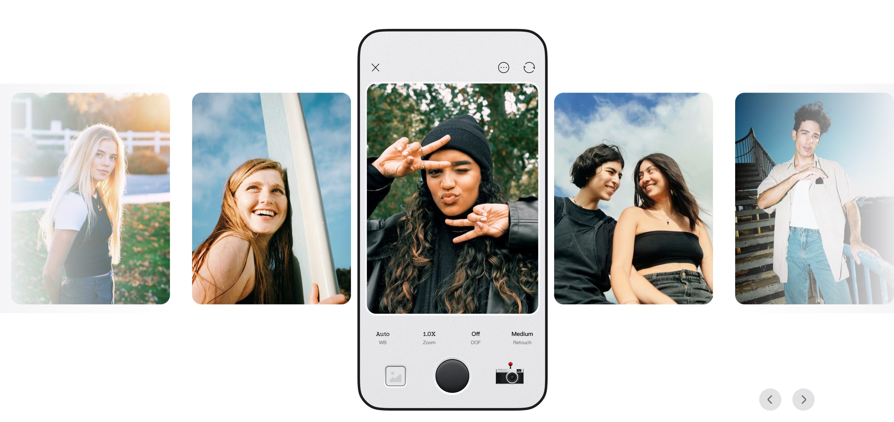
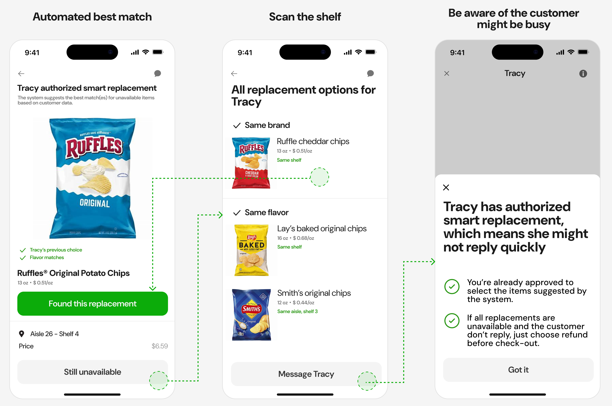
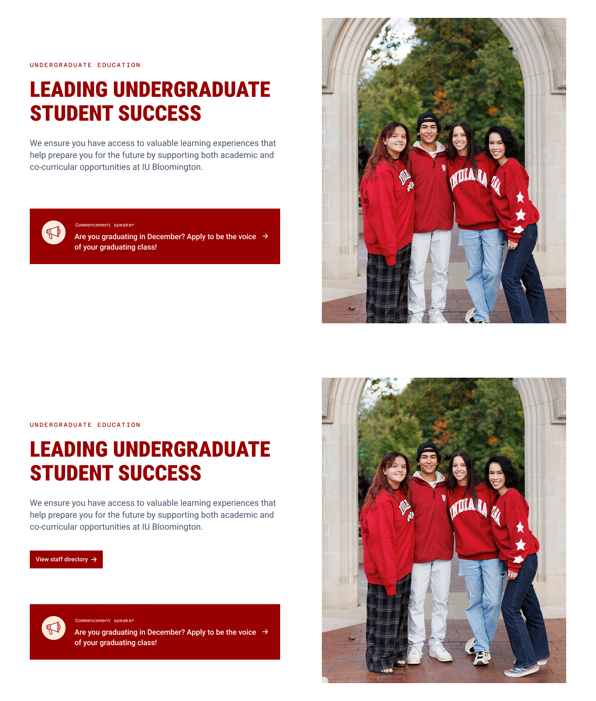
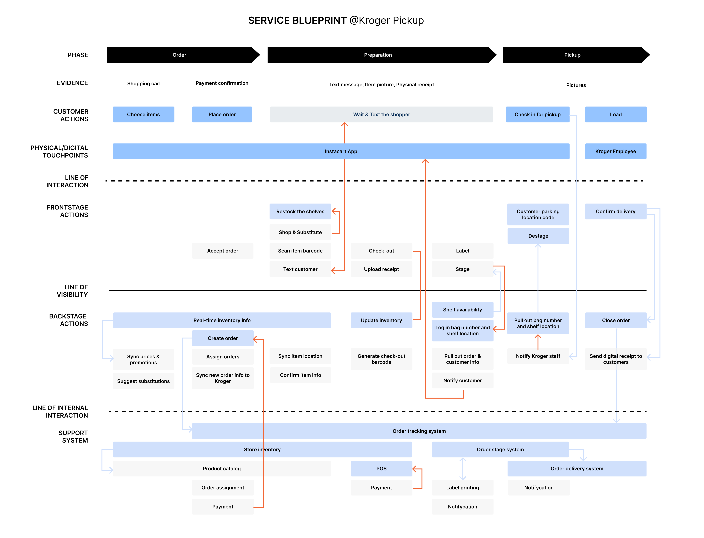
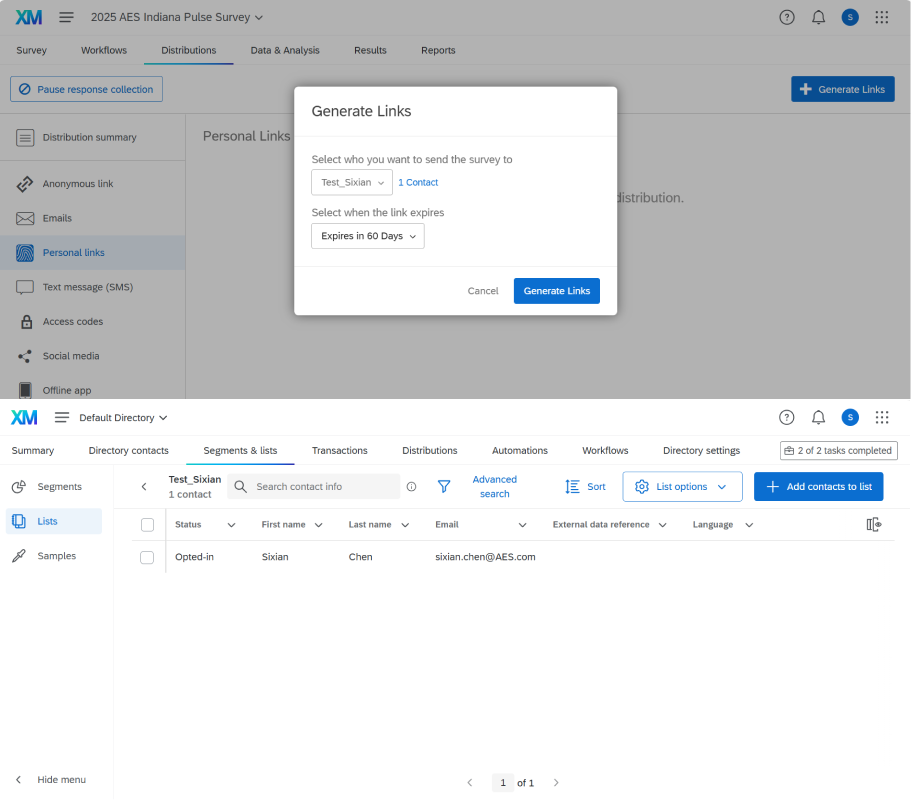

I'm a Mixed-method UX Researcher with strengths in rapid user testing, experimentation, and market research
Previously with teams at  , reducing the cost of decision-making and shaping product and business strategy for Fortune 500 clients
, reducing the cost of decision-making and shaping product and business strategy for Fortune 500 clients
Adobe,
Kroger,
and BCG,
reducing the cost of decision-making and shaping product and business strategy for Fortune 500 clients
Resolving a high bounce rate with rapid mixed-methods research

Guiding a Chinese photo-editing app into North America with in-depth interviews
Informing e-commerce product and market strategy for a legacy lock brand
My Research Toolbox
Each card is a mini case study: a real product question, the method I chose to answer it, and what changed as a result. Click a card to see how I put that method to work.
Observing how Instacart shoppers choose substitutes for out-of-stock items

Observing how Instacart shoppers choose substitutes for out-of-stock items
Research question
When an item is out of stock, how do Instacart shoppers decide what to substitute?
Why this method
Direct observation captures the nuances behind each choice and gives a more objective picture, especially when the choice may pit the shopper’s interests against the customer’s.
Recruiting
Placed real Instacart orders and asked each assigned shopper whether they would be willing to take part in the study.
Insights
- When time allows, shoppers prefer to check with the customer rather than decide on their own
- Efficiency comes first: shoppers don’t want to wait for a reply or walk extra aisles to find a substitute
Impact
Informed three design decisions in the redesign of the substitution feature:
- Suggest a best match based on the customer’s past purchases, prioritizing the same brand or flavor
- Show replacement options on the same shelf or aisle first
- Tell shoppers when the customer has pre-approved replacements and may not reply quickly
Testing whether a student-focused homepage still needed its staff CTAs

Testing whether a student-focused homepage still needed its staff CTAs
Context
The new homepage design rewrote its call-to-action (CTA) copy, and the team disagreed on what to keep:
- Designer: students are now the primary users, so the CTAs should speak to them
- Executives: no harm in keeping the original staff-facing CTAs as well
Research question
How many CTAs should the homepage show: only the student-facing ones, or the staff-facing ones too?
Why this method
The question came down to a single variable, the CTA set, so I could hold everything else on the page constant and compare the two versions directly.
Participants & timeline
10 students and 5 staff members, over 2 days
Insights
- The staff-facing CTA confused students: they thought they had landed on the wrong website
- Staff members rarely used the CTAs, since they usually reach their target pages through browser bookmarks or by typing the URL
Impact
The test results brought stakeholders into agreement on the design decision, and the team shipped the version with a single CTA.
Mapping onsite returns for Kroger pickup orders across two companies and four systems

Mapping onsite returns for Kroger pickup orders across two companies and four systems
Timeline
3 weeks
Context
Kroger wanted pickup customers to be able to return or exchange items onsite, right at pickup. I researched which use cases this would need to cover and prioritized them by feasibility.
Assumptions
- The partnership limits data sharing, so not every need can be met and we must prioritize
- Staff at the two companies have no informal channel and pass data through the systems only
Method
- Contextual inquiry
- Stakeholder interviews
- Desk research
Why a service blueprint
The question spanned two companies, four systems, and both the frontstage experience and backstage data flows. A blueprint put it all on one map and showed where handoffs would break an onsite return.
Outcome
Identified 12 opportunities and prioritized 4 of them based on technical feasibility, data availability, user experience, and the competitive landscape.
Uncovering what drove low customer satisfaction at a utility company

Uncovering what drove low customer satisfaction at a utility company
Team
Customer Experience Intern (me)
Senior UX Researcher
Product Owner
Data Scientist
Method
Large-scale pulse survey (short questionnaires sent at a high frequency) targeting 40K customers over 12 months
Why this method
To get findings that generalize. Compared with a longitudinal survey, it split customers into 12 equivalent sample groups, so we could collect data more often while contacting each customer less.
What I did
- Quality-checked the questionnaire so no question was ambiguous and no answer option was missing
- Built it in Qualtrics, using skip logic to split it into four sub-surveys for different participant groups
- Imported personalized survey links into Salesforce and wrote the recruiting email
- Built a Qualtrics dashboard to track results as responses came in
Designing a stratified sample and validating a new scale from scratch
Designing a stratified sample and validating a new scale from scratch
View slides (PDF)Context
A course project for social survey methods.
Method
Survey
- Sampling: stratified random sampling, nonresponse weighting
- Statistics: factor analysis, reliability analysis (Cronbach’s α), correlation, multiple linear regression, mediation analysis
Sampling
- Population: undergraduates at one university
- Strata: year × discipline (humanities and social sciences, STEM, medicine)
- Target sample: 120 (20 per variable × 6 variables)
- Invitations: 400 (150 / 154 / 96 by discipline), allocated by enrollment and drawn at random within each stratum
- Responses: 134 (35%)
- Nonresponse weights by discipline: 3.95 / 2.96 / 2.18 (response rates 25% / 34% / 46%)
Statistics
- New 10-item social boldness scale: factor loadings 0.82 to 0.84, α = 0.84
- Established scales (social anxiety, extraversion, fear of negative evaluation, self-esteem, attachment): α = 0.72 to 0.94
- Regression: extraversion and fear of negative evaluation predicted social boldness (R² = .50, p < .001); extraversion predicted social anxiety (R² = .21, p < .001)
- Mediation: fear of negative evaluation affected social boldness through closeness and dependence in attachment; extraversion affected it through dependence
Sampling bias
To raise the response rate we offered personalized results reports, which likely drew students already interested in psychology, so the sample may over-represent them.